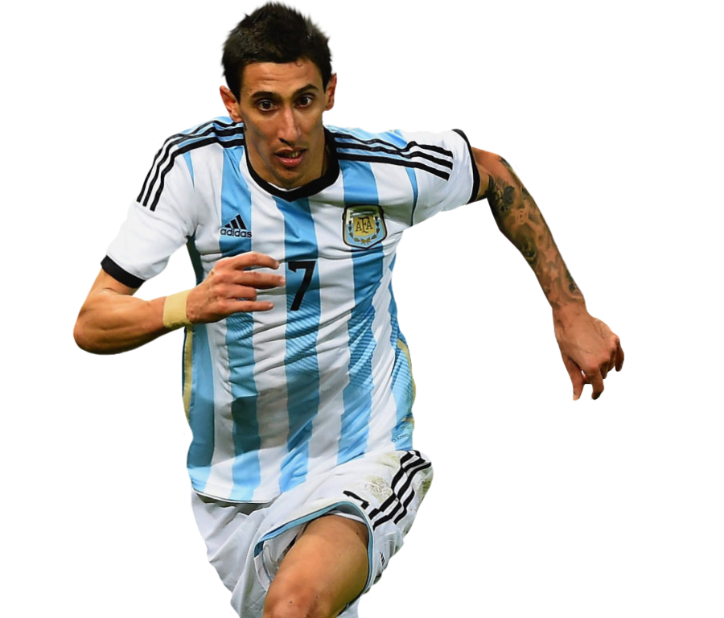

Neymar Jr.
Neymar has hit back at Brazilian critics who didn't like his
response to Argentina's Copa America victory. The Brazilian star
was seen embracing his former Barcelona teammate Lionel Messi
after the final in Rio, which Argentina won 1-0 thanks to a strike
from Angel Di Maria.

Lionel Messi
Leo Messi's footballing career started in 1995 at Newell's Old
Boys, where he played until the year 2000. At the age of 13,
Lionel Messi crossed the Atlantic to try his luck in Barcelona,
and joined the Under 14s. Messi made spectacular progress at each
of the different age levels.

Cristiano Ronaldo
Cristiano Ronaldo dos Santos Aveiro GOIH ComM (Portuguese
pronunciation: [kɾiʃˈtjɐnu ʁɔˈnaɫdu]; born 5 February 1985) is a
Portuguese professional footballer who plays as a forward for
Serie A club Juventus and captains the Portugal national team.
Best Dribller of the world.

Paulo Dybala
Paulo Exequiel Dybala (born 15 November 1993) is an Argentine
professional footballer who plays as a forward for Serie A club
Juventus and the Argentina national team. Commonly referred to as
"La Joya" ("The Jewel"),[4] or "U Picciriddu"

Mesut Özil
Mesut Özil (German pronunciation: [ˈmeːzut ˈøːzil], Turkish:
[meˈsut œˈzil]; born 15 October 1988) is a German professional
footballer who plays as an attacking midfielder for Süper Lig club
Fenerbahçe. Nicknamed "The Assist King".

Mauro Emanuel Icardi
Mauro Emanuel Icardi (Spanish pronunciation: [ˈmawɾo emaˈnwel
iˈkaɾði]; born 19 February 1993) is an Argentine professional
footballer who plays as a striker for Ligue 1 club Paris
Saint-Germain and the Argentina national team. Icardi began his
career at La Masia,

Ángel Fabián Di María
Ángel Fabián Di María (born 14 February 1988) is an Argentine
professional footballer who plays for Ligue 1 club Paris
Saint-Germain and the Argentina national team. He can play as
either a winger or attacking midfielder. Di María began his career

Kylian Mbappé Lottin
Kylian Mbappé Lottin (born 20 December 1998) is a French
professional footballer who plays as a forward for Ligue 1 club
Paris Saint-Germain and the France national team. Mbappé began his
senior career with Ligue 1 club Monaco,

Mohamed Salah Hamed
Mohamed Salah Hamed Mahrous Ghaly (born 15 June 1992) is an
Egyptian professional footballer who plays as a forward for
Premier League club Liverpool and captains the Egypt national
team.Considered one of the best players in the world.

Harry Edward Kane
Harry Edward Kane MBE (born 28 July 1993) is an English
professional footballer who plays as a striker for Premier League
club Tottenham Hotspur and captains the England national team.
Regarded as one of the best strikers in the world.

NKevin De Bruyne
Kevin De Bruyne is a Belgian professional footballer who plays as
a midfielder for Premier League club Manchester City, where he is
vice-captain, and the Belgium national team. He is one of just
three players to have won the PFA Players' Player of the Year
award.

Philippe Coutinho Correia
Philippe Coutinho Correia is a Brazilian professional footballer
who plays for Spanish club Barcelona and the Brazil national team.
He is known for his combination of vision, passing, dribbling and
ability to conjure curving long-range strikes